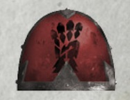
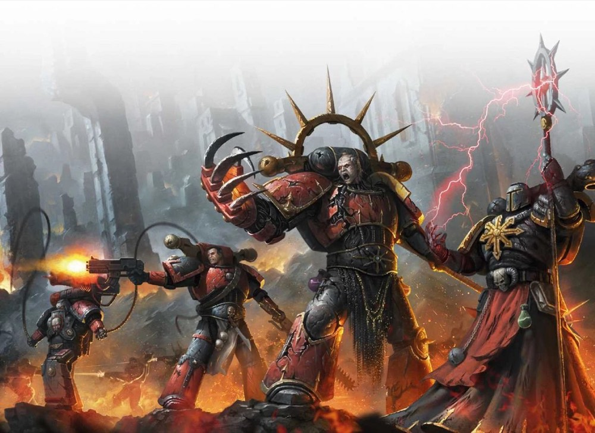

Red Corsairs
| Red Corsairs | |
|---|---|
 Heraldry of the Red Corsairs, the Astral Claws' clawed hand defaced | |
| Founding | As the Astral Claws, M35 (by most Imperial records); as the Red Corsairs, 912.M41 |
| Master | Huron Blackheart, the Tyrant of Badab (since 912.M41) |
| Homeworld | Badab Primaris (to 912.M41); since then the Maelstrom, with New Badab |
| Fortress | The Blackstone Fortress Corsair's Keep (since c. 999.M41); the battle barge Spectre of Ruin |
| Allegiance | Imperium of Mankind (to 901.M41); renegade (901–912.M41); Chaos Undivided |
| Colours | Blood red with black and gunmetal trim |
| Size | About 200 Astral Claws in 912.M41; now thousands of renegade Astartes and a pirate fleet of many hundreds of ships |
| Combat doctrine | Void piracy, boarding actions and raids; heavy fire support |
| Notable battles | |
| Badab War (901–912.M41); Neh'Tar's Crusade (938.M41); Pandorax Campaign (959–961.M41); Raid on Bakka (980.M41); War for Chogoris (999.M41–M42); Terran Crusade (999.M41–000.M42); Arks of Omen (M42) | |
The Red Corsairs are a renegade warband of Chaos Space Marines who lead the largest pirate fleet in the eastern Imperium. They were once the Astral Claws, a loyal Space Marine Chapter of Badab Primaris charged with guarding the Maelstrom, a warp rift of the Segmentum Ultima. Under their Chapter Master, Lugft Huron, the Tyrant of Badab, the Astral Claws led the secession of the Badab Sector that became the Badab War (901–912.M41). When the rebellion was crushed in 912.M41, about two hundred survivors fled into the Maelstrom with their maimed master, who bargained with the Ruinous Powers for his life and took the name Huron Blackheart.[1][2]
The Red Corsairs have since become the dominant power of the Maelstrom. They grow by taking in renegade Astartes from every Chapter and Legion, and they raid across the Segmentum Ultima. Since the opening of the Great Rift in 999.M41 they have been sighted farther from the Maelstrom than ever, besieged the White Scars' homeworld of Chogoris, and captured Roboute Guilliman himself for a time in the Terran Crusade.[2][3]
History
[edit]The Astral Claws
[edit]The Astral Claws were raised in M35 (Imperial records give the Tenth Founding; other records differ) to guard against the daemons, Orks and pirates that came out of the Maelstrom. Their homeworld was Badab Primaris, capital of the Badab Sector, and they led the Chapters of the region, the Maelstrom Warders. Their gene-seed lineage and their early records were struck from the archives by an Inquisitorial Order of Obliteration after 912.M41.[1][4]
In M41 (697 or 715.M41; the records give both dates) Lugft Huron became Chapter Master after his predecessor Rovik Blake was killed by the Ork warboss Vorg Manburna. Huron won great victories against the Orks, including the defence of Khirab, but grew suspicious of the Imperium and began to keep the sector's tithes for its defence. In 901.M41 he destroyed an Imperial investigation fleet sent to Badab, and the Executioners, Lamenters and Mantis Warriors joined his secession.[1]
The Badab War
[edit]The war lasted from 901 to 912.M41 and is described in the article Badab War. It ended in the storm of the Palace of Thorns on Badab Primaris in 912.M41, where Huron was struck down by a melta blast from the dying Captain Zhrukal Androcles of the Star Phantoms. The surviving Astral Claws carried him into the Maelstrom. The other secessionist Chapters were pardoned after penitent crusades; the Astral Claws were declared Excommunicate Traitoris and erased from the record.[1]
Lords of the Maelstrom
[edit]
In the Maelstrom, Lord Apothecary Garreon and Forge Master Valthex rebuilt Huron's ruined body. Huron renamed himself Blackheart and his warriors the Red Corsairs, and turned them from wardens of the rift into its pirates. Recorded actions of the late 41st millennium include:
- 937.M41: the Third Purging of Lastrati.[2]
- 938.M41: the destruction of an Imperial crusade into the Maelstrom and the death of Salamanders Chapter Master Neh'Tar.[2]
- 959–961.M41: the Pandorax Campaign.[2]
- 979.M41: the attack on Optera Void Station; 980.M41: the Raid on Bakka.[2]
- Late M41 (dates unrecorded): the Gildar Rift campaign, the Battle of Oldarian, the Destruction of Mortain, and the capture of the Space Wolves strike cruiser Wolf of Fenris at Parenxes.[2]
The warband grew quickly. Renegades from loyal Chapters, Traitor Legionaries from the Eye and mortal pirates all came to the Maelstrom, and many Astartes defected to Huron after being captured. Shortly before the Thirteenth Black Crusade (c. 999.M41), Abaddon the Despoiler gave Huron a Blackstone Fortress, which he named Corsair's Keep, to seal an alliance between the Red Corsairs and the Black Legion.[2]
Era Indomitus
[edit]
During the Thirteenth Black Crusade the Maelstrom joined the Great Rift (999.M41). In the Terran Crusade (999.M41–000.M42), the Red Corsairs, with the daemon Kairos Fateweaver and the aid of Magnus the Red, ambushed Guilliman's fleet and held the primarch and the Macragge's Honour prisoner aboard Corsair's Keep, until Cypher and the Harlequins freed them. Skarbrand and his daemons attacked the fortress in pursuit of Guilliman during the captivity.[3]
The Red Corsairs then invaded Chogoris and the Yasan Sector. They were defeated on Chogoris, but held much of the sector for a time and captured the White Scars' Chapter Master Jubal Khan. During the campaign Huron's lieutenant Verngar tried to overthrow him with the relic called the Ebon Talon and was maimed in the duel that followed. Imperial records place the war in 999.M41 and the first years of M42.[5]
Later in the Era Indomitus (M42, dates unrecorded) the Red Corsairs were defeated by Typhus on Danasar, fought splinters of Hive Fleet Leviathan that reached the Maelstrom after the Devastation of Baal, took part in the War of Beasts on Vigilus, raided the Crimson Eyrie against the Aeldari prince Yriel, and fought against the Black Legion in the Arks of Omen, although some of their warriors marched under Angron at Malak.[3][2]
Organisation and doctrine
[edit]The Red Corsairs have no Codex structure. Huron rules through a council of captains and reavers, each commanding a ship or a raiding company. Astral Claws veterans hold the senior posts. The warband's core is a fleet of captured warships led by the Spectre of Ruin, served by mortal crews and supported by cultist bands. Huron's taste for heavy fire support, learned as a Devastator, still shapes the warband's tactics. They prefer boarding actions and fast raids, take ships and slaves rather than worlds, and fight pitched battles only when the prize is great.[2]
The Red Corsairs pay homage to the Chaos Gods as a whole without serving any one of them, and many warriors keep their old Chapter loyalties in all but name. Their armour is red, with the Astral Claws' clawed hand defaced and often reversed.[2]
Timeline
[edit]| Date | Event |
|---|---|
| M35 | Astral Claws founded |
| 697 or 715.M41 | Huron becomes Chapter Master |
| 901.M41 | Huron destroys an Imperial fleet; Badab War begins |
| 912.M41 | Fall of the Palace of Thorns; Red Corsairs formed in the Maelstrom |
| 938.M41 | Death of Neh'Tar of the Salamanders |
| 959–961.M41 | Pandorax Campaign |
| c. 999.M41 | Corsair's Keep given by Abaddon |
| 999.M41–000.M42 | Capture and escape of Guilliman |
| 999.M41–early M42 | War for Chogoris |
| M42 | Danasar; Vigilus; Arks of Omen |
See also
[edit]References
[edit]- ^ a b c d The Badab War (rev. 980.M41). Officio Militaris (restricted).
- ^ a b c d e f g h i j k Liber Renegatus: the Red Corsairs (rev. 999.M41). Ordo Malleus (sealed).
- ^ a b c Records of the Indomitus Crusade (ongoing). Office of the Lord Commander.
- ^ Codex Imperialis (rev. 980.M41). Adeptus Terra.
- ^ Chronicles of Chogoris (c. 010.M42). Khan's archive, Quan Zhou.